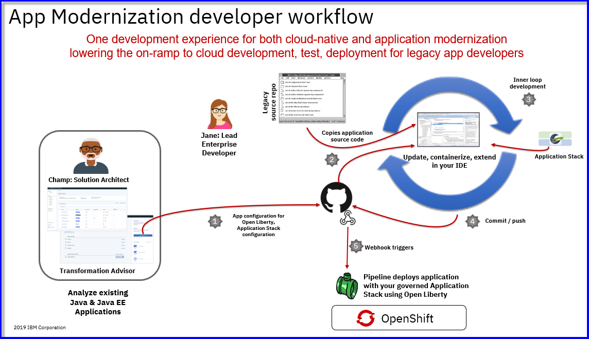
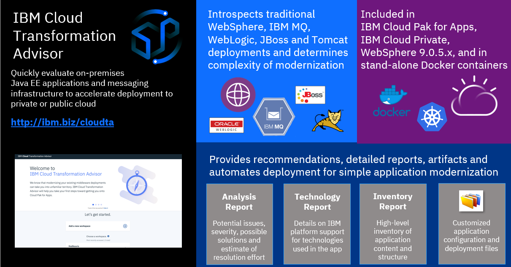

Modernize Existing Applications with IBM Transfromation Advisor and IBM Cloud Pak for Applications
The IBM Cloud Pak™ for Applications provides a hybrid foundation that is built on open standards, and enables workloads and data to run anywhere. It includes a self-service environment that combines open source tools with your existing middleware for continuous integration and delivery, compliance, and visibility across secure, hybrid, multi-cloud environments. You can use it to modernize your existing applications and develop new cloud-native applications for deployment on any cloud.
The value of IBM CLoud Pak for Application
Introducing the value that IBM Cloud Pak for Appications brings to the enterprise.
5 minutes
Overview Of IBM Cloud Pak for Applications
Placeholder for Geoffs recorded presentation
Modernize existing Java Workloads
Using IBM Transformation Advisor to assess your aplication portfolio for modernization reccomendations
IBM Cloud Transformation Advisor helps you to analyze your on-premises workloads for modernization. It determines the complexity of your applications, estimates a development cost to perform the move to the cloud, and recommends the best target environment.
Understanding the value of IBM Tranformation Advisor
2 minutes
Quick demonstration: How to use Transfomration Advisor to assess my WebSphere Applications
See for yourself how IBM Transfromation Advisor is used to easily assess your existig WebSphere workloads and delivers insights into the feasabilty of modernizing the applications for containers and cloud.
7 minutes
Quick demonstration: How to use IBM Transformation Advisor's migration plan to facilitate moving your application to containers and RedHat OpenShift Platform
See for yourself how using IBM Transformation Advisor and its automatic generation of a migration bunlde can assist with containerization and deployment to RedHat OpenShift Platform.
The migration bundle includes generated artifacts that assist with building, configuring, and deploying the application to WebShhere Liberty on the RedHat OpenShift Platform via integrated application stacks and pipelines with IBM Cloud Pak for Applications.
8 minutes
Guided Tutorials
1. Application Modernization - Assessment Phase
Gain valuable insights into applications during application modernization "Assessment" phase.
This tutorial focuses on the application assessment (evaluation) phase of application modernization for Java workloads to cotainer and cloud. You will use IBM Transformation Advisor to evaluate on-premises Java applications and identify a migration candidate for moving to the cloud.

2. Application Modernization - Re-Platform Phase
Gain valuable insights into applications during application modernization "Assessment" phase.
IBM Transformation Advisor bridges the gap between existing development activities and cloud-native development together with the ‘Accelerators for Teams’ in the IBM Cloud Pak for Applications (ICPA). Transformation Advisor will accelerate the development process by creating the configuration and deployment artifacts for an application, then facilitate the developer’s use of the enhanced developer productivity tools in IBM Cloud Pak for Applications.
This tutorial brings the cloud-native development experience from the “Create and Deploy a Cloud Native App to IBM Cloud Pak for Applications (ICPA)” lab, which develops a cloud native microservice application using the nodejs-express and java-spring-boot Application Stacks, to the modernization of existing application.

3. FREE! Try IBM Transformation Advisor Local to assess your applications yourself!
The process of modernizing applications and moving to the cloud can be a large undertaking. Careful planning is needed to prepare business inventory and infrastructure and to determine the best path forward for each application. If you don't yet have a cloud platform but are ready to begin the assessment for your modernization journey, installing IBM Cloud™ Transformation Advisor locally can help you get started.
Transformation Advisor Local is available for local istallation so you can get started quickly to assess your applications today. Transformation Advisor runs locally on docker containers on yor developer desktop.
Transformation Advisor Local is FREE for use!
